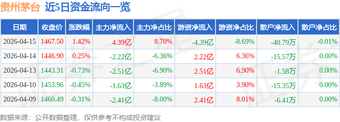

先说结论：茅台跌了不是末日，但急着抄底才是。
4月16日晚，茅台发了2025年年报——营收1688亿，同比下降1.21%；净利润823亿，同比下降4.53%。看起来还行？但这是它2001年上市以来，第一次营收和利润同时下滑。
第二天开盘，股价直接跳空低开4.3%，盘中最低1399.87，一度跌破1400。收盘1407.24，跌3.8%，市值一天蒸发近700亿。
股王跌落神坛，评论区炸了。有人喊着"抄底"，有人喊着"跑路"。我来说说我的看法。
先看数据：
| 指标 | 2024年 | 2025年 | 变化 |
|---|---|---|---|
| 营业收入 | 1709亿 | 1688亿 | -1.21% |
| 归母净利润 | 862亿 | 823亿 | -4.53% |
| 经营现金流 | 924亿 | 615亿 | -33.46% |
利润下滑4.5%还能接受，但经营现金流暴跌33%，这个信号很不好。说明不是"少赚了"，是"收钱变难了"。
拆开看，茅台酒本身营收1465亿，还微增了0.39%，毛利率93.53%。真正拖后腿的是系列酒——营收222亿，下滑9.76%，毛利率也掉了3.76个百分点。茅台酒没跌，茅台系列酒先扛不住了。
更关键的是第四季度。Q4净利润176.93亿，同比暴跌30.34%，是全年贡献最少的一个季度，显著低于市场预期。
白酒行业专家蔡学飞说了句很到位的话："这是茅台一次罕见的主动急刹车。"
2025年四季度，传统旺季需求偏弱。茅台做了两件事：
第一，12月全月暂停向经销商发货。大幅收缩供给，牺牲短期报表，维护价格体系和渠道健康。当时飞天茅台散瓶价格跌到1485元，已经跌破1499的官方建议零售价。
第二，减少经销商非标产品配额。茅台15年、生肖茅台等产品的市场成交价已经低于经销商打款价，减配额是为了避免经销商年底资金压力大抛售。
控量保价的效果是：截至2026年3月底，散瓶飞天市场价回升到1580元附近，价格基本企稳。但代价是Q4营收大幅缩水。
说白了，茅台选择了"短期牺牲报表，换取渠道健康"。这个选择对不对？我认为是对的。如果为了冲刺业绩而放货，渠道价格崩了，修复成本远比一季度的利润缺口大得多。
这次年报还有一个容易被忽略的变化：直销渠道收入845亿，同比增长12.96%；批发代理渠道842亿，同比下降12.05%。直销首次超过经销。
2026年1月1日，i茅台数字平台上线了包含飞天茅台在内的所有主流产品。这意味着茅台正在把定价权从经销商手里收回来。
对长期投资者来说，这是好事——直销毛利率更高，对终端价格的管控力更强。但对短期股价来说，渠道转型期的阵痛不可避免。经销商利润被压缩，渠道库存需要消化，这些都需要时间。
说完公司说估值。当前白酒四大龙头的数据摆在一起：
| 公司 | 当前价 | PE(动) | PB | 趋势 | 估值 |
|---|---|---|---|---|---|
| 贵州茅台 | 1407 | 21.41 | 7.20 | ↓ | 合理 |
| 五粮液 | 102 | 13.79 | 2.77 | ↓ | 低估 |
| 泸州老窖 | 101 | 10.38 | 3.00 | ↓ | 低估 |
| 山西汾酒 | 177 | ~15 | ~4.5 | ↓ | 偏低 |
茅台PE 21倍，五粮液14倍，泸州老窖才10倍。同样在跌，茅台比同行贵了一倍。
当然，茅台的品牌护城河和定价权确实值溢价。但2014年行业最悲观的时候，茅台PE跌到过9倍，五粮液和泸州老窖只有6倍出头。如果行业继续下行，21倍PE并不安全。
机构给茅台的目标均价1935，27个买入评级。但我更在意一个事实：2021年2月茅台盘中创下2413.60的历史高点，到现在已经腰斩过一轮了。机构的目标价，看看就好。
回顾最近6个月的走势，茅台在1376-1477之间反复震荡：
注意一个细节：4月16日盘中最高1477是6个月的最高价，恰好出现在年报发布当天。这说明市场在暴雷前还在做最后的冲高，很可能是机构提前减仓的窗口。

这是所有人最关心的问题。
先说我的仓位：我没买茅台，短期也不打算买。
理由不复杂——等得起就不急。茅台这种股票，真正的机会出现在恐慌时刻，不是在"跌破某个整数关口"的时候。
给三个具体价位：
1350以下——开始观察
跌到这里意味着PE回到20倍以下，开始接近历史估值中枢下沿。但观察不等于买入，要看当时有没有催化剂（比如政策转向、消费数据回暖）。
1300附近——考虑分批建仓
PE大概18倍，和2018年贸易战低点差不多。如果基本面没恶化（茅台酒毛利率仍在90%以上），可以每次建1/4仓位。
1200以下——基本面没变坏就重仓
PE降到15-16倍，接近2014年那轮调整的中位水平。前提是公司没有出现重大治理问题或品牌信任危机。
为什么不是1400？因为1400是心理关口，不是价值关口。心理关口最大的问题是——撑不住的时候，会一口气跌到下一个整数位。4月17日盘中已经摸到了1399.87，1400只是纸糊的。
茅台2025年年度分红每股27.993元，加上中期分红23.957元，全年合计51.95元。按当前股价算，股息率约3.55%。
3.55%的股息率，比银行定存高，比大部分理财产品也高。而且茅台有上千亿现金，分红能力毋庸置疑。
但要注意：如果股价继续下跌10%（到1266），你的分红回报还抵不上本金亏损。靠分红持有可以，但别拿分红当抄底理由。
一家好公司和一个好价格，是两回事。
茅台的品牌护城河没变，毛利率91%的行业天花板没变，定价权没变。变了的是行业周期——高端消费承压、渠道去库存、经销商利润被压缩。这些不是一两个季度能逆转的。
历史上茅台两次大底：2003年PE 16倍，2014年PE 9倍。现在的21倍，离"真正的便宜"还有距离。
等得起，就不急。
你觉得茅台这次能跌到多少？1300？1200？还是1400就能守住？评论区说说你的判断。
以上仅为个人观点，不构成投资建议。投资有风险，入市需谨慎。